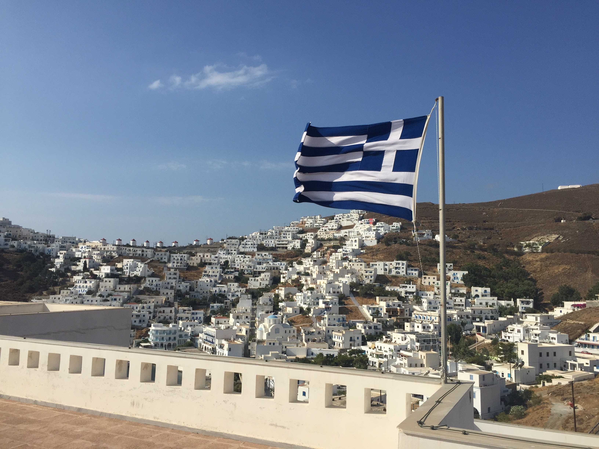
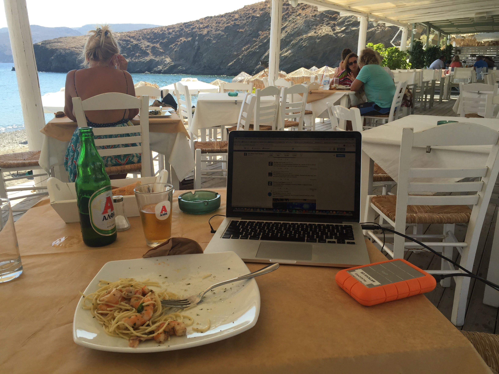
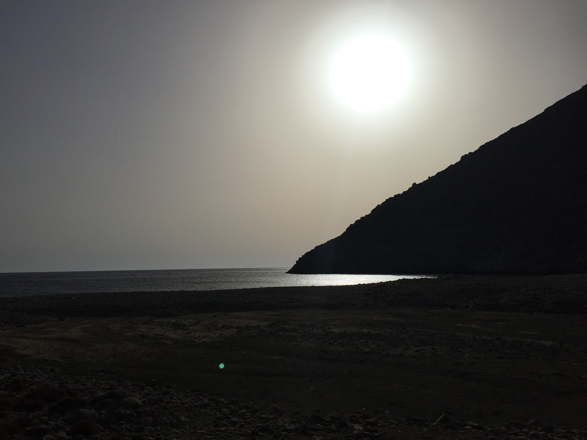
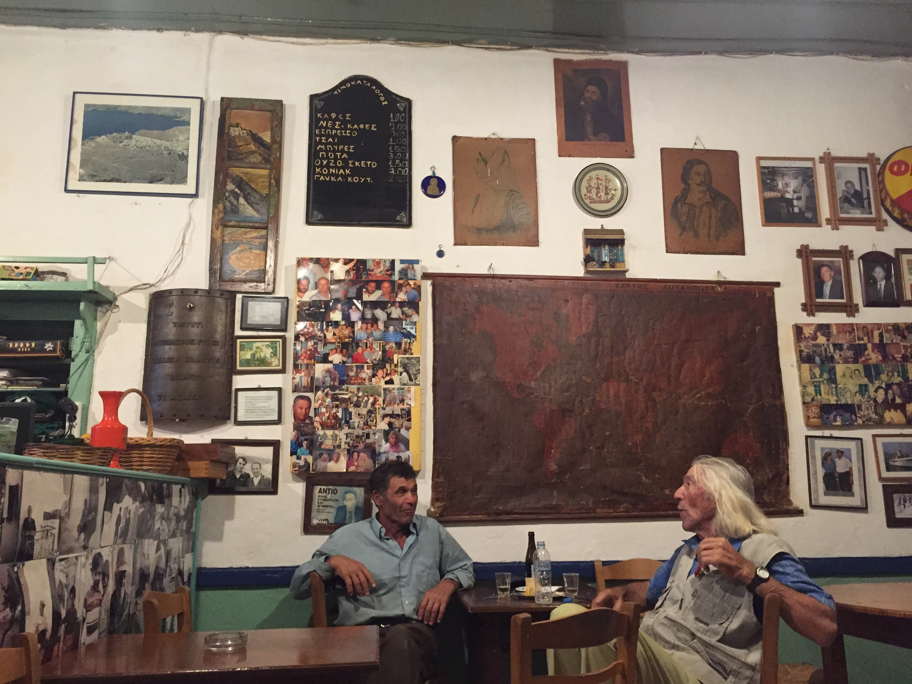
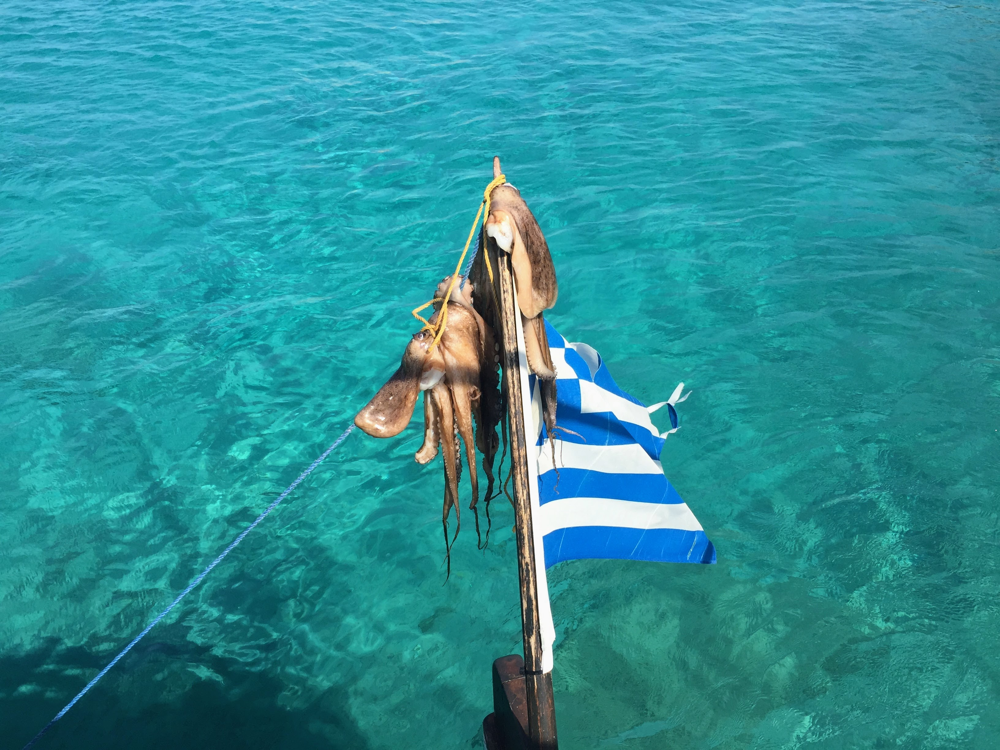

How I ended up there
The plan was three days. A friend's wedding in the Aegean, some sun, fly back to Geneva. On the second evening I came down some steps in the dark and twisted my ankle badly enough that I couldn't really walk for a week. No particular reason to leave an island when you can't walk and the wifi at the beach taverna is fine. I stayed two more weeks. Worked in the mornings, ate at the same table every afternoon, swam when the ankle allowed. There was a strange low pressure to all of it — the kind you only get when you're stuck somewhere good and have stopped making plans.
Getting there
By air: Sky Express and Olympic Air fly from Athens in about an hour. The plane is small. The approach is something.
By sea: Overnight ferry from Piraeus. Around ten hours. Cabins are available and it's comfortable. You arrive at dawn.
Where it is: Dodecanese, Southeast Aegean. Closer to Turkey than to Athens. Population around 1,300.

The Chora from the castle. Windmills on the ridge.
The island
Two humps of dry rock connected by a narrow isthmus — butterfly-shaped, if you squint. The Chora sits on a hill above the port, white houses rising to a Venetian castle at the top. It looks exactly like you hope Greece will look.
This was about ten years ago. It's probably more developed since — I've heard it's become better known. I'd imagine it's still pretty nice. The Chora isn't going anywhere.

My office for two weeks. Pasta con gamberetti. Alpha beer. LaCie hard drive. Adequate wifi.
The working part
That table became a daily ritual. Arrive around noon. Order pasta or whatever fish they had. Open the laptop. The sea was two metres away. Nobody bothered me. The wifi was adequate, which is all you need. I got more done in those two weeks than I had in months. I'd recommend twisting your ankle somewhere with worse restaurants.

One of the far beaches. Go in the afternoon.
Where to stay
I stayed at the Oneiro Suites in the Chora. Good views over the village and the sea, clean, well placed. Book something in the upper village if you can — waking up inside the Chora in the morning is the point. The walk down to the port takes about fifteen minutes and the walk back up is the price you pay for the view.
The kafeneio
There is an old kafeneio in the village. Go. Drink a coffee. Wait. The men who have been sitting there for forty years will still be sitting there. It is not a performance for tourists. The walls are covered in family photographs, icons, a chalkboard menu with prices that haven't changed. Order the coffee. Sit down. Stay longer than you planned.

The kafeneio. The men have been here longer than the photographs.

Drying in the sun. On your plate by evening.
The food
Order the octopus. The fishermen dry it on lines and poles near the harbour — you'll see it before you eat it, which is the right way to understand where your food comes from. Grilled simply, with lemon. Don't overthink it.
The beach tavernas are exactly what they should be. White plastic chairs, paper tablecloths, whatever came in that morning. Eat lunch at the water. This is not complicated.
The verdict
This was ten years ago and I haven't been back, so I can't tell you exactly what it's like now. But the Chora is the Chora and the octopus comes from the same sea. I'd still go. Stay in the upper village. Eat whatever they caught that morning. If you break something, stay longer.